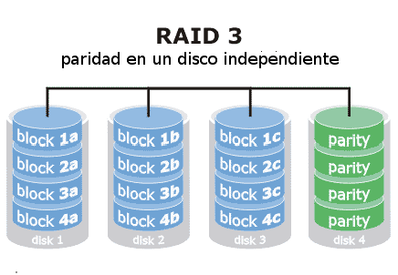
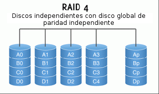
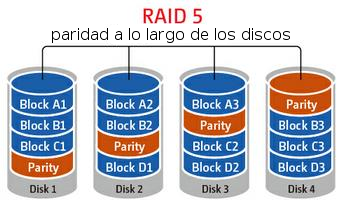
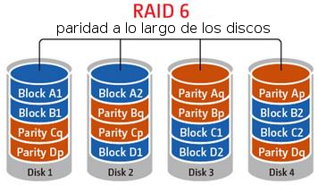

Universidad Nacional Experimental Del Táchira
Decanato De Docencia
Dpto. Ingeniería en Informática
Discos
Código 0435607T
Contenido
- Introducción
- Estructura física de los discos.
- Planificadores del disco.
- Gestión de disco.
- Gestión de volúmenes.
Introducción
El sistema de archivos puede verse como una estructura de tres capas:
- Interfaz de usuario.
- Estructuras de datos.
- Estructuras de almacenamiento.
También se requieren ciertos métodos para hacer uso de la parte física del S.A.
Almacenamiento secundario
- Lectura y escritura aleatorias.
- Almacenamiento no volátil.
- Alta velocidad de acceso.
- Susceptibles de ser soporte para el sistema de archivos.
- Suele ser mas económicos que otros tipos de memoria.
Almacenamiento secundario
Principales elementos
- Discos: su estructura y cómo es gestionado.
- Controladores: cómo se controlan todas las operaciones sobre los discos y como se realiza la planificación de peticiones.
Almacenamiento secundario
Discos
Son dispositivos de almacenamiento masivo no volátil, acceso aleatorio a nivel de sector, soporte para el sistema de intercambio del gestor de memoria virtual o para el sistema de archivos. Y se pueden clasificar en:
Por la interfaz de su controlador:
- Dispositivos SCSI
- Dispositivos IDE
- Dispositivos SATA
Por a la tecnología empleada
- Discos duros
- Discos ópticos
- Discos extraíbles
Estructura de un disco duro
Los DD están compuesto por varias superficies magnetizadas y cabezas lectoras/escritoras por efecto electromagnético. Las superficies se dividen en cilindros, con una pista para cada cabeza y un cierto número de sectores por pista.

Fuente de la imagen: Estación tecnológica

Ejemplo de un cilindro del disco
Capacidad de un disco duro
-
La capacidad del disco se mide mediante:
Capacidad = cilindros * pistas * sectores * tamaño sector - Estos datos suelen estar impresos en el reverso del disco.
- Los SSD escriben la información en bloques, por lo tanto, no se organizan de la misma forma que los disco duros mecánicos.
Estructura de un disco duro
Tiempo de acceso
Las operaciones de E/S se calculan en base a dos parámetros:
- Tiempo de búsqueda: lo que se tarda a ir de una pista a otra.
- Tiempo de latencia: la media rotación que tardan en llegar los datos bajo las cabezas, una vez sobre la pista.
T_acceso = n * T_búsqueda + T_latencia + T_transferencia.
Estructura física del disco
-
Densidad de cada pista
La densidad lineal de almacenamiento es constante. Actualmente las pistas exteriores tienen más sectores que las interiores. -
Intercalado de sectores
Optimiza la velocidad de acceso a sectores lógicamente consecutivos. Mientras el controlador copia datos a memoria principal no puede transfiriendo datos del disco, que se sigue girando.
Estructura física del disco
-
Almacenamiento intermedio en el controlador
Se puede leer la pista entera y mantenerla en memoria del controlador -
Controladores inteligentes
Cuando controlan varios dispositivos, permiten efectuar operaciones de forma solapada.
Estructura física del disco
- Los discos se ven como grandes vectores de bloques lógicos (unidad mínima de transferencia)
- Este vector se proyecta sobre los sectores del disco secuencialmente
- La numeración crece en la pista, luego en las restantes pistas del cilindro y luego en los restantes cilindros del disco.
- El manejador de disco no sabe nada de archivos, sólo de particiones y bloques
- Sector 0: primer sector de la primera pista del primer cilindro, allí se guarda la tabla de particiones.
- Particiones activas o de sistema: permiten arrancar un sistema operativo.
Planificador de disco
El sistema operativo es responsable de utilizar el hardware eficientemente. En el caso de los discos, esto significa un tiempo de acceso rápido y ancho de banda.
-
Tiempo de búsqueda
Es el tiempo que toma al disco mover las cabezas al cilindro que contiene el sector deseado. -
Latencia rotacional
Es el tiempo adicional esperando a que el disco rote y posicione el sector deseado a la cabeza del disco.
Funcionamiento del disco duro en cámara lenta
Observe el movimiento del brazo mecánico
Planificador de disco
Existen distintos algoritmos para organizar el servicio de solicitudes de E/S de disco:
- FCFS (First Come First Served)
- SSTF (Shortest Seek Time First)
- LOOK
- C-LOOK- SCAN
- C-SCAN
Para los siguientes ejemplos, vamos a suponer que la apuntador de cabeza está en el sector 53. Y se va a trabajar con la siguiente cola de solicitudes (0 - 199):
98, 183, 37, 122, 14, 124, 65, 67
First Come First Served (FCFS)
Se van atendiendo las peticiones a medida que van llegando a la cola.

Shortest Seek Time First (SSTF)
Accede a las peticiones mas cercanas de la posición actual, pero existe riesgo de nunca atender a las mas lejanas debido a nuevas peticiones cercanas (hambruna). Este algoritmo es una modificación de SJF.

SCAN (Elevador o Ascensor)
El brazo empieza en un extremo del disco y se mueve hacia el otro extremo, sirviendo solicitudes hasta que llega al otro extremo, donde se voltea el movimiento de la cabeza y sigue sirviendo.

C-SCAN (Lista circular)
Provee un tiempo de espera más uniforme que SCAN, pues la cabeza se mueve de un extremo del disco al otro, sirviendo solicitudes conforme avanza. Pero cuando llega al otro extremo, regresa al inicio del disco, sin atender ninguna solicitud en el camino de regreso.
Trata los cilindros como una lista circular que da la vuelta del último cilindro al primero.

C-LOOK
Versión modificada de C-SCAN, el brazo sólo va tan lejos como la última solicitud en cada dirección, da reversa inmediatamente, sin antes ir hasta el final del disco.

Gestión de disco
Formateo de disco
- Un disco nuevo es como una pizarra en blanco.
- Es necesario crear una estructura o dividir el disco en unidades (sectores, cilindros, pistas), que sean manejables para el hardware (formateo físico).
- El sistema operativo requiere crear su propia estructura para grabar datos en un disco físico. Crea entonces particiones y sistemas de archivos.
Gestión de arranque
Bloque de arranque
- Es el primer bloque a leer luego de que el hardware del computador ha sido iniciado.
- Se encuentra el cargador del sistema o los sistemas operativos instalados en el computador (Master boot record, MBR). Allí se identifica cual partición o sistema operativo debe iniciar.
- Un ejemplo es un computador con dual boot. (Windows y Linux instalados en el mismo equipo).
Bloques defectuosos
- Los discos poseen parte móviles con una mínimas tolerancias.
- Durante su uso se pueden presentar bloques defectuosos, los cuales deben ser gestionados por el sistema operativo para evitar su uso.
- Usualmente existen herramientas para marcar estos bloques y eliminarlos como utilizables. Se pierde un poco de espacio disponible pero se evita la pérdida de datos.
Gestión de volúmenes
- Aquí es donde se planifica el espacio y la disposición de los discos del sistema.
- Se deben tener en cuenta los dispositivos, velocidades, balanceo de carga, tolerancia a fallos.
- Para administrar esto recursos se tienen los administradores de volúmenes.
Gestión de volúmenes
Administradores de volúmenes
- Permite agrupar dispositivos físicos (como discos o particiones) en un mismo dispositivo virtual que, visto desde el sistema operativo, será un disco simple con prestaciones especiales.
- Algunos de los volúmenes gestionados por estas herramientas son: RAID, LVM, EVMS, VVM.
Gestión de volúmenes
RAID
- Acrónimo de Redundant Array of Inexpensive Disks (Arreglo redundante de discos baratos).
- La idea es agrupar varios discos para tener prestaciones adicionales como guardar información redundante, o también obtener un volume lógico con la capacidad de varios discos físicos.
- Con esta organización se pueden obtener ventajas de rendimiento y tolerancia a fallos en la información, según se disponga el arreglo de discos.
Gestión de volúmenes
RAID
- Al tener varios discos físicos disponibles se puede distribuir los datos en ellos.
- No se depende de un solo cabezal de lectura/escritura para llevar a cabo los accesos al disco.
- Con los datos distribuidos en los distintos discos, según su disposición, no se tiene un único punto de fallo de hardware, permitiendo la recuperación de la información en caso de algún incidente.
Gestión de volúmenes
Niveles de RAID
- RAID 0: distribución en bandas de datos a nivel de bloques y no tiene redundancia
Gestión de volúmenes
Niveles de RAID
- RAID 1: duplicación espejo de los discos.
Gestión de volúmenes
Niveles de RAID
- RAID 2: Organización con código de corrección de errores ECC. Distribuye los bytes en discos distintos. Si uno de los discos falla, se puede reconstruir los datos a partir de su paridad
Gestión de volúmenes
Niveles de RAID
- RAID 3: organización de paridad con entrelazados de bits. Tiene las mismas características de RAID 2. Requiere un disco de paridad. Aumenta la tasa de transferencia al leer un byte en N vías. El arreglo completo soporta menos operaciones de E/S por segundo, todos los discos participan en cada lectura/escritura simultáneamente. También tiene implicaciones de procesamiento al calcular la paridad en cada lectura/escritura (todos los niveles de RAID la tienen).
Gestión de volúmenes
Niveles de RAID
RAID 3
Gestión de volúmenes
Niveles de RAID
- RAID 4: organización de paridad con entrelazado de bloques. Utiliza una distribución de bandas a nivel de bloques como en RAID 0, pero manteniendo un bloque de paridad en un disco separado, con información de los bloques de los otros N discos. Un bloque solo es accedido por un disco, liberando los otros para lectura de otros bloques.
Gestión de volúmenes
Niveles de RAID
RAID 4
Gestión de volúmenes
Niveles de RAID
- RAID 5: paridad distribuida con entrelazado de bloques. Se distribuyen la paridad y los datos en los N + 1 discos del arreglo. Un bloque de paridad no esta contenido en el mismo disco donde se encuentran los datos que representa. Evita el uso excesivo de un único disco de paridad. Es el mas utilizado.
Gestión de volúmenes
Niveles de RAID
RAID 5
Gestión de volúmenes
Niveles de RAID
- RAID 6: esquema de redundancia P + Q. Es muy parecido a RAID 5, pero almacena información redundante adicional para proteger los datos ante múltiples fallas de disco.
Gestión de volúmenes
Niveles de RAID
RAID 6
Gestión de volúmenes
Niveles de RAID
- RAID 0+1: (Investigar)
- RAID 1+0: (Investigar)
- RAID 10: (Investigar)
- RAID 5+0: (Investigar)
Gestión de volúmenes
Logical Volume Manager (LVM)
- Es un método de localización de espacio en disco que puede ser fácilmente redimensionado.
- Un volumen lógico puede estar compuesto de varios volúmenes físicos (o particiones), pero un volumen físico no puede estar en mas de un volumen lógico.
- Es una arquitectura independiente a la estructura de los discos físicos.
Gestión de volúmenes
Logical Volume Manager (LVM)
- Es sobre los volúmenes lógicos donde se hacen las particiones para instalar el sistema operativo y las aplicaciones.
- Cuando una de estas “particiones” requiere mas espacio, se utilizan las herramientas administrativas de LVM para extenderlas hasta donde se requiera.
Gestión de volúmenes
Logical Volume Manager (LVM)
-
Los elementos básicos que los componen:
- Physical volume/Volúmenes físicos (PV): particiones en el disco rígido donde se puede tener un grupo de volúmenes.
- Volume group/Grupo de volúmenes (VG): Son grupos de volúmenes físicos que son usados como volúmenes de almacenamiento (como si fueran un solo disco). Contienen volúmenes lógicos.
Gestión de volúmenes
Logical Volume Manager (LVM)
-
Los elementos básicos que los componen:
- Logical volume/Volúmenes lógicos (LV): una partición virtual/lógica que reside en un grupo de volúmenes y está compuesta por extensiones físicas. Pueden verse como particiones normales.
- Physical extent/Extensiones físicas (PE): una pequeña parte de un disco (usualmente 4MB) que puede ser asignada a un volumen lógico. Las extensiones físicas son partes de los discos que pueden ser asignadas a cualquier partición
Gestión de volúmenes
Ventajas de LVM (1/2)
- Usar cualquier cantidad de discos como un gran disco (VG).
- Tener particiones (LV) del tamaño de varios discos.
- Redimensionar/crear/borrar particiones (LV) y discos (VG) como sea necesario (no depende de la posición del volumen lógico dentro del grupo de volúmenes, como pasa con las particiones normales).
Gestión de volúmenes
Ventajas de LVM (2/2)
- Redimensionar/crear/borrar particiones (LV) y discos (VG) en línea (los sistemas de archivo aun necesitan ser redimensionados, pero algunos soportan dimensionamiento en línea).
- Se puede nombrar los discos (VG) y particiones (LV) como sea necesario.
- Se crean pequeñas particiones (LV) y se pueden dimensionar dinámicamente mientras se van llenando.
Gestión de volúmenes
Desventajas de LVM (2/2)
- Exclusivo de Linux (o casi). No hay apoyo oficial en la mayoría del resto de sistemas operativos (FreeBSD, Windows, ...).
- Se puede nombrar los discos (VG) y particiones (LV) como sea necesario.
- Los pasos adicionales en la configuración del sistema, lo hace más “complicado”.